Planetary Gearbox Disassembly/Assembly
DISASSEMBLE
- Remove ATF level plug -2- and overflow tube -1-.
- Seal ATF cooler connections.
- Take out torque converter.

- Secure transmission to assembly support with bolts -1 and -2-.

- Remove transmission housing cover with gasket (arrow).
- Remove sump.
- Remove ATF screen.

- Remove valve body with conductor strip, refer to Valve Body and Sealing Plugs.

- Remove sealing plugs for -B1-.
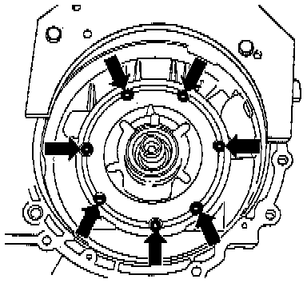
- Remove ATF pump bolts (arrows).
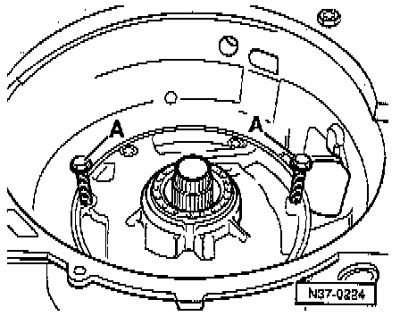
- Thread bolts -A- (8 mm) into the tapped holes of ATF pump.
- Press ATF pump off by turning bolts -A- evenly.

- Take out all clutches with supporting tube, -B2- plates, springs and spring caps together.
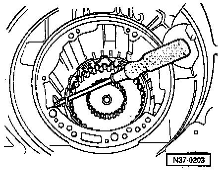
- Insert screwdriver through hole of large sun gear to loosen and tighten bolt for small drive shaft.

- Loosen small drive shaft bolt -arrow-.
- Remove small drive shaft bolt, washer and shim.
Planet carrier axial needle bearing remains in gearbox/ input gear.
- Pull out small drive shaft.

- Pull out large drive shaft (arrow).
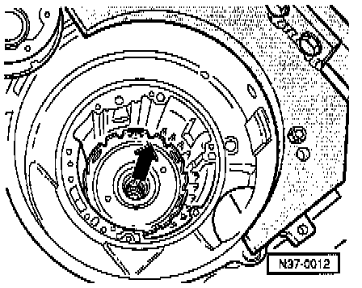
- Pull out large sun gear (arrow).
- Before removing free wheel remove Transmission Vehicle Sensor (VSS).
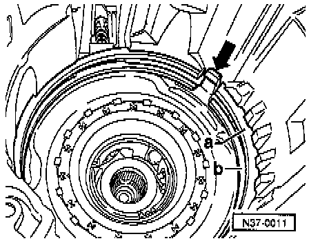
- Remove supporting tube circlip -a- and free wheel circlip -b-.
- Take free wheel out of housing by pulling on free wheel retaining wedge -arrow- with pliers.

- Pull out planet carrier with dished spring.
- Remove reverse gear brake -B1- plates.
NOTE:
^ It is not necessary to remove input gear to disassemble planetary gearbox.
^ Removing and installing input gear. Service and Repair
ASSEMBLE

- Install O-ring into planet carrier.
NOTE: After replacing planet carrier, adjust. Adjustments

- Install axial needle bearing with washers in input gear.
1 - Input gear is installed in transmission housing.
2 - Axial needle bearing washer, install smooth side into Input gear.
3 - Axial needle bearing
4 - Axial needle bearing washer
5 - Planet carrier with seal installed

- Place washer and axial needle bearing on small sun gear in planet carrier.
- Centralize washer and axial needle bearing in small sun gear.
- Install inner and outer -B1- plates.
- Install pressure plate with flat side facing plates.
Thickness of pressure plate varies according to number of plates, refer to Free Wheel and Reverse Gear Brake Band (B1).

- Install dished washer with convex side facing toward free wheel.
NOTE:
^ When replacing:
- Transmission housing
- Free wheel
- Piston for reverse gear brake -B1-
- Plates
^ then adjust -B1-. Adjustments
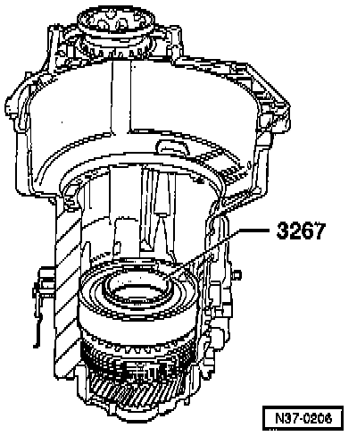
- Preload free wheel rollers with 3267 and insert free wheel.
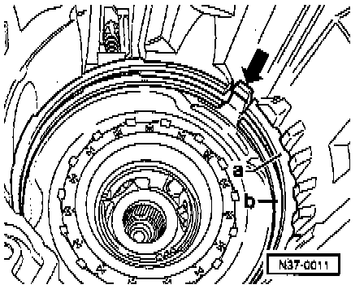
- Install circlip for free wheel -b- and circlip for supporting tube -a-.
- Insert circlip gaps over free wheel retaining wedge (arrow).
- Install Transmission Vehicle Speed Sensor
- Perform check measurement of -B1-. Adjustments
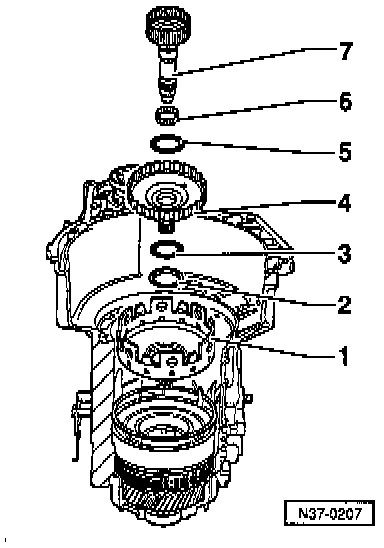
- Install components into housing starting with large sun gear down to small input shaft.
1 - Large sun gear
2 - Needle bearing washer (collar faces to large sun gear)
3 - Axial needle bearing
4 - Large drive shaft
5 - Axial needle bearing
6- Needle bearing
7 - Small drive shaft
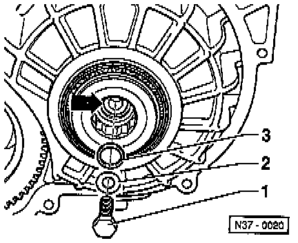
- Install small drive shaft bolt -1- with washer -2- and shim -3
- Tighten to: 30 Nm (22 ft lb)
NOTE:
^ Install shim -3- onto small drive shaft shoulder (arrow).
^ Determining shim thickness, refer to adjusting planet carrier. Adjustments
- Perform planet carrier check measurement. Adjustments

- Install axial needle bearing with washer on 4th gear clutch -K3-.
1 - Axial needle bearing with washer
Moisten axial needle bearing washer with ATF so that bearing, when installed, sticks to -K3-. Install bearing washer on-K3-.
2 - 4th gear clutch -K3

- Install 4th gear clutch -K3-.
- Fit seal -1- in the groove (arrow).
NOTE: Ensure piston rings seat correctly.
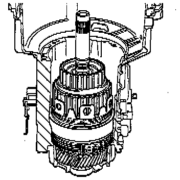
- Install 1st to 3rd gear clutch -K1-.

- Install shims -arrow- in -K1-.
NOTE:
^ Remeasure shim when replacing -K1-, -K2- or ATF pump, refer to adjusting Clutch Play Between -K1- and -K2-. Adjustments
^ 1 or 2 shims can be installed.
- Install reverse gear clutch -K2-.

- Install supporting tube for -B2- plate set (arrow) so that supporting tube groove engages in free wheel wedge.
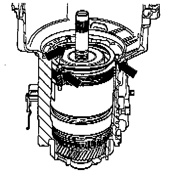
- Install -B2- plates as follows:
- First install a 3 mm thick outer plate
- Install three spring caps in outer plate
- Install compression springs (arrows)
- Install all but the last outer plate
- Before installing the last (measured) outer plate, place three spring caps onto compression springs.
- Replace corrugated washer.
NOTE:
^ When replacing
Supporting tube
ATF pump
Plates
^ The 2nd and 4th gear brakes -B2- are to be adjusted. Adjustments
- Replace ATF pump seal.
- Install O-ring on ATF pump..

- Install ATF pump.
- Tighten bolts evenly in a crosswise pattern.
NOTE:
^ Ensure that the O-ring is not damaged.
^ Tighten to: 8 Nm (70 inch lb) plus an additional 1/4 turn (90�).
^ Additional turn can be done in several stages.
- Perform check measurement of clutch play, refer to Clutch Play Between K1 and K2. Adjustments
- Install sealing plugs, valve body and oil pan, refer to Valve Body and Sealing Plugs.
- Install cover with gasket and spacer bushings.

- Install ATF overflow tube -1- and level plug -2-.